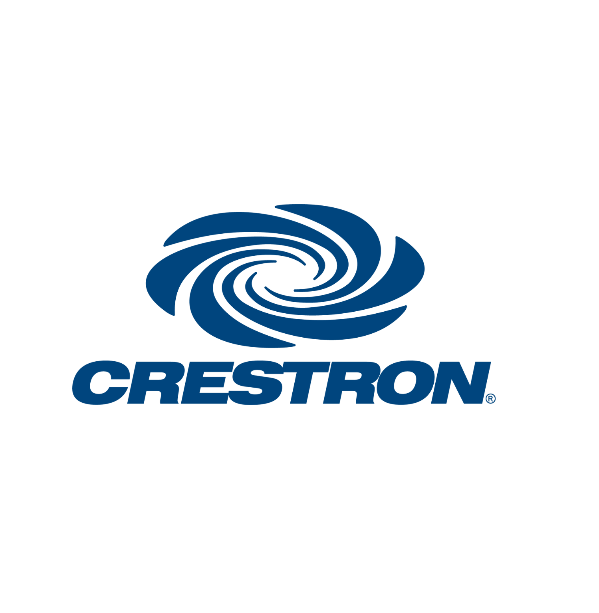
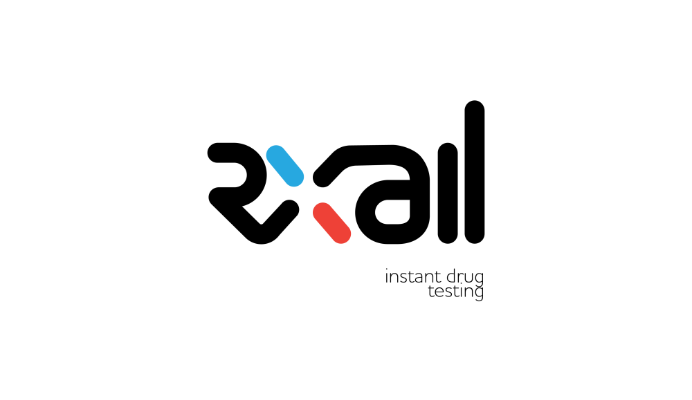

Professional Work Experience
Key Skills:
Machine Learning | Modeling
Data Visualization |
Data Warehousing | ETL Pipelines
API Tools & Integration | CI/CD | Agile
German Football Association (DFB), Data Science Intern
Automated the creation of 2 of the German National Soccer Team's opponent analysis and scouting tools (Opponent Roster Overview & Opponent Matches Overview), reducing the time previously spent manually creating these products by ~50%
Created pre- and post-tournament analysis structures with pre-fact bookmaker-based simulations and post-fact xG-based simulations
Simulated the UEFA Euro 2024 Qualifiers to predict the 24 teams to qualify for the tournament, thereby improving resource allocation for the tournament by ~20%
Los Angeles Dodgers, Data Consultant
Analyzed a dataset of 400,000+ observations and developed several linear, logistic, and random forest models trained with and without spin profile characteristics to determine whether batted-ball spin contributes to quality of contact in baseball
Presented an interactive Power BI Dashboard with key findings to Dodgers R&D team, along with a constructed ‘R’ package as a final deliverable
Crestron Electronics, Data Engineering Intern

Constructed a platform to automate the Project Intake process at Crestron, providing users with a centralized database to manage projects and automatically assign relevant BPs to New Project Approval flows using Microsoft Power Platform
Reduced related business-processing times by 20–30% and followed an Agile development scheme throughout the internship, consisting of daily scrums and the use of Azure DevOps
Integrated the Power BI REST API with Power Automate and PowerPoint to allow users to instantly generate a complete, multi-slide .PPTX Presentation with specific and relevant information about their Project
Etesian Ecommerce, Software Engineering Intern
Designed UI, UX and member login portal of subsidiary company (SellGlobal) website using Wix, Docker and Ghost CMS
Constructed a member-specific client dashboard that highlights KPIs and automated the build for new sign-ups with Zapier
RxAll, Software Developer Intern

Developed a map-based web-app (RxRate) with the Google Maps API, Node.js, MySQL and Firebase that helps travelers find safe pharmacies and avoid counterfeit drugs in developing countries – iterated with feedback from UI/UX testing
Negotiated sign-ups from over 20 pharmacies in Yangon, Myanmar, through sales pitches and product demonstrations